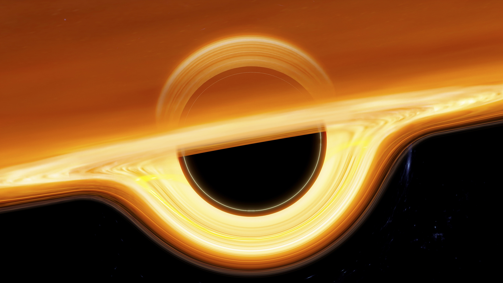
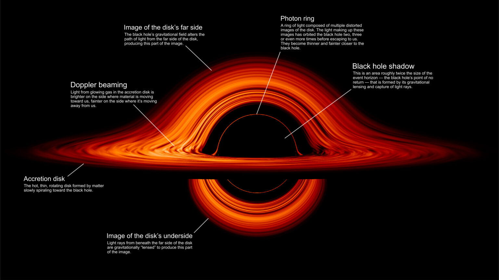
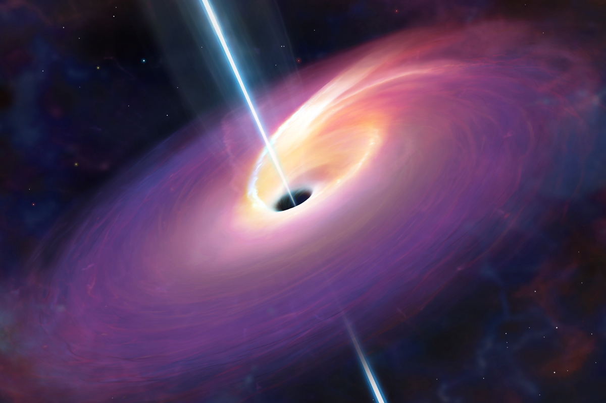
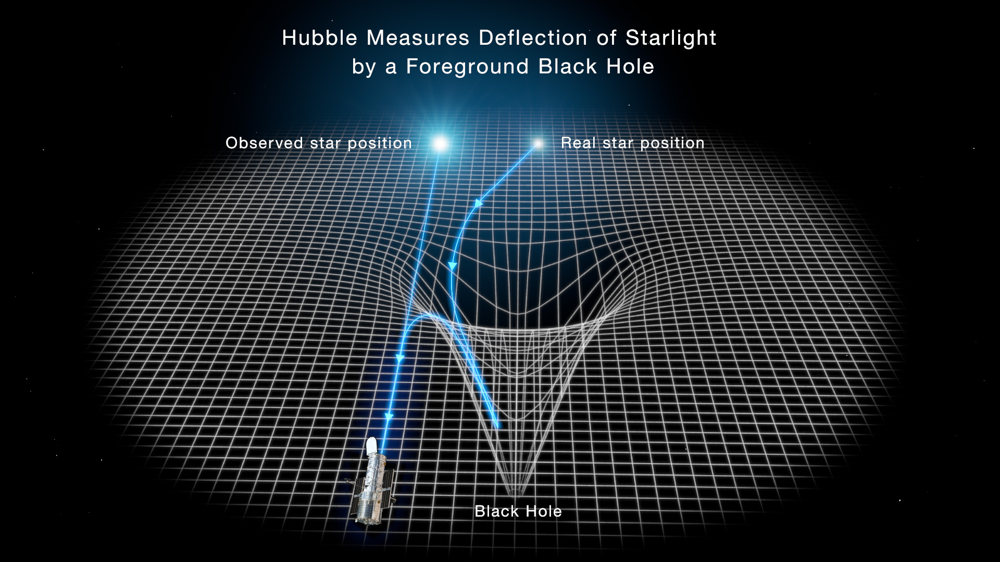
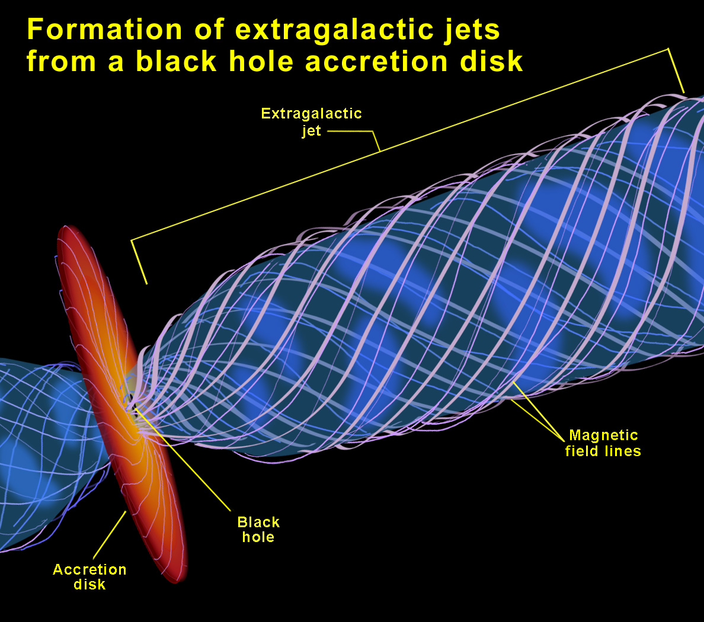
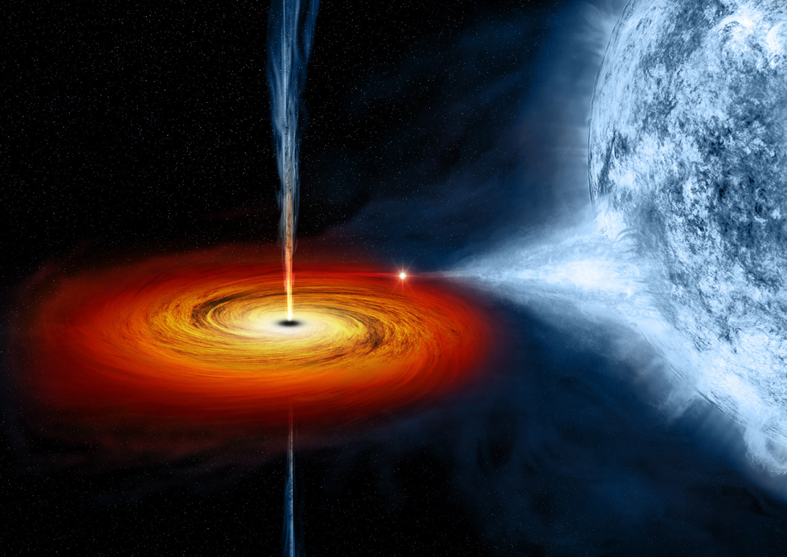
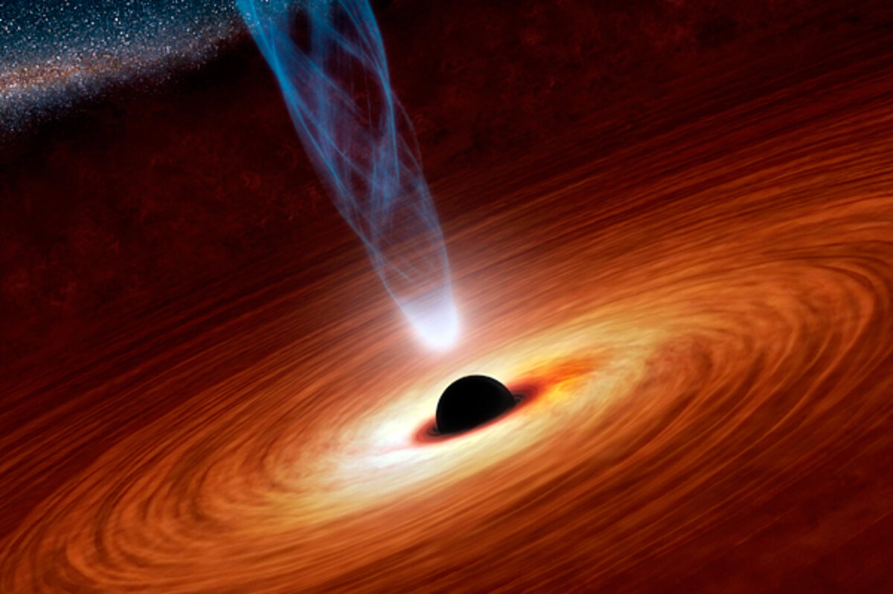
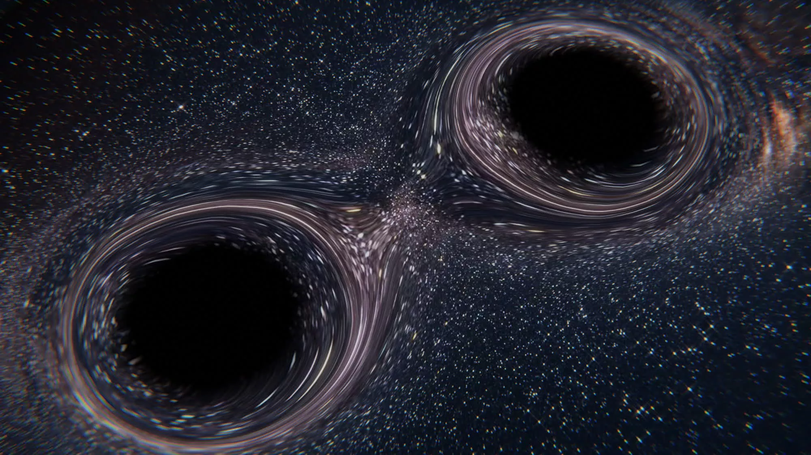

Powerful Gravity
Black Hole-ன் gravity அதன் அருகிலுள்ள space மற்றும் time-ஐ கூட குறிப்பிடத்தக்க அளவில் பாதிக்கிறது.
பிரபஞ்சத்தில் இருக்கும் மிக மர்மமான மற்றும் மிகவும் சக்திவாய்ந்த பொருட்களில் ஒன்றான Black Hole-ஐ ஆராய்வோம். அதன் gravity மிகவும் வலிமையானது; ஒரு குறிப்பிட்ட எல்லைக்குள் சென்ற ஒளியாலும் கூட வெளியேற முடியாது.

Black Hole என்பது மிகவும் அதிகமான mass மிகச் சிறிய பகுதியில் குவிந்திருக்கும் ஒரு cosmic object. அதன் gravity space-time-ஐ மிகவும் வலுவாக வளைத்து விடுகிறது.
Black Hole-ன் gravity அதன் அருகிலுள்ள space மற்றும் time-ஐ கூட குறிப்பிடத்தக்க அளவில் பாதிக்கிறது.
Event Horizon-க்குள் சென்ற ஒளி வெளியேற முடியாத அளவுக்கு gravitational effect வலிமையாகும்.
Einstein-ன் General Relativity மூலம் black holes-ன் gravity மற்றும் space-time curvature-ஐ புரிந்துகொள்ள முடியும்.
Science Note: Black Hole என்பது ஒரு cosmic vacuum cleaner போல எல்லாவற்றையும் தூரத்திலிருந்து இழுக்கும் பொருள் அல்ல. அதே mass கொண்ட வேறு ஒரு object-ஐப் போலவே அதன் தொலைவில் இருக்கும் gravitational influence இருக்கும்.
Black Hole-ன் மிக முக்கியமான பகுதிகளில் ஒன்று Event Horizon. இது ஒரு physical surface அல்ல; ஒரு boundary — அதைத் தாண்டிய பிறகு வெளியேறுவது சாத்தியமில்லை.

Event Horizon என்பது Black Hole-ஐச் சுற்றியுள்ள ஒரு முக்கியமான boundary. அந்த எல்லைக்குள் சென்ற பொருளிலிருந்து வெளியே வரும் பாதைகள் அனைத்தும் Black Hole-ன் interior-ஐ நோக்கியே செல்கின்றன.
அதனால் வெளியில் இருக்கும் observer-க்கு அந்த object மீண்டும் வெளியே வர முடியாது.
Event Horizon-ஐ ஒரு solid surface என்று நினைக்கக்கூடாது.
இந்த boundary-க்குள் சென்ற ஒளி வெளியே செல்ல முடியாது.
Black Hole-ன் mass அதிகரிக்கும்போது அதன் Event Horizon-ன் அளவும் அதிகரிக்கிறது.
Event Horizon-ன் அருகில் gravitational effects மிகவும் வலுவாக இருக்கலாம். ஆனால் Event Horizon என்பது Black Hole-ன் physical surface அல்ல.
கருந்துளையைச் சுற்றி வாயு, தூசி மற்றும் பிற பொருட்கள் மிக வேகமாகச் சுழன்று கொண்டிருக்கும் பகுதியே Accretion Disk எனப்படும் சேர்க்கை வட்டு.

கருந்துளை தானாகவே ஒளியை வெளியிடாது. ஆனால் அதன் அருகில் இருக்கும் பொருட்கள் மிக வேகமாகச் சுழன்று கருந்துளையை நோக்கி விழும்போது அவை மிக அதிகமாக சூடாகின்றன.
இந்த சூடான வாயு மற்றும் தூசி மின்காந்த கதிர்வீச்சை வெளியிடுவதால், கருந்துளையைச் சுற்றியுள்ள பகுதி மிகவும் பிரகாசமாகத் தோன்றலாம்.
வாயு மற்றும் தூசி கருந்துளையைச் சுற்றி வேகமாகச் சுழல்கின்றன.
சுழற்சி மற்றும் உராய்வு போன்ற செயல்களால் பொருள் அதிகமாக சூடாகிறது.
சூடான பொருள் பல்வேறு வகையான மின்காந்த கதிர்வீச்சை வெளியிடுகிறது.
Accretion Disk-ன் வெப்பநிலை மற்றும் ஒளிர்வு அதன் அமைப்பு, வேகம் மற்றும் கருந்துளைக்கு அருகிலுள்ள சூழ்நிலைகளைப் பொறுத்து மாறுபடும்.
மையத்தில் இருக்கும் மிக வலுவான ஈர்ப்பு பகுதி
கருந்துளையைச் சுற்றி வேகமாகச் சுழலும் பொருட்கள்
சூடான பொருட்களால் உருவாகும் கதிர்வீச்சு
மிகப் பெரிய நிறை கொண்ட கருந்துளை தனது சுற்றுப்புற கால-வெளியை வலுவாக வளைப்பதால், அதற்கு அருகில் செல்லும் ஒளியின் பாதையும் வளைந்து செல்லும்.

ஆம் — சில சூழ்நிலைகளில் ஈர்ப்பு ஒளிவளைவு தொலைவில் இருக்கும் பொருட்களின் ஒளியை வளைத்து, அவற்றை நமக்கு வேறுபட்ட வடிவத்திலும் நிலையில் இருப்பது போலக் காட்டலாம்.
அதிக நிறை கொண்ட பொருட்கள் அவற்றைச் சுற்றியுள்ள கால-வெளியின் வடிவத்தை மாற்றுகின்றன.
கருந்துளைக்கு அருகில் செல்லும் ஒளி, வளைந்த கால-வெளியைப் பின்பற்றி தனது பாதையை மாற்றுகிறது.
ஈர்ப்பு ஒளிவளைவு மூலம் தொலைவில் இருக்கும் விண்மீன்கள் மற்றும் விண்மீன் திரள்களின் ஒளியை ஆய்வு செய்ய முடியும்.
ஒளி தனது வேகத்தை மாற்றிக்கொள்வதால் வளைவது அல்ல. கருந்துளையின் ஈர்ப்பு காரணமாக கால-வெளியே வளைந்திருப்பதால், ஒளி அந்த வளைந்த பாதையைப் பின்பற்றுகிறது.
கால-வெளியை வளைத்தல்
வளைந்த பாதையில் பயணித்தல்
தொலைதூர பொருட்களை ஆய்வு செய்தல்
சில கருந்துளை அமைப்புகளில், கருந்துளையின் அருகிலுள்ள பொருளிலிருந்து மிக வேகமாக வெளியேறும் மின்னூட்டம் கொண்ட துகள்களின் குறுகிய கற்றைகள் உருவாகின்றன.

கருந்துளையின் Event Horizon-ஐத் தாண்டி பொருள் வெளியேறுவதில்லை. அதற்கு பதிலாக, கருந்துளையைச் சுற்றியுள்ள சூடான பொருள், காந்தப்புலங்கள் மற்றும் வேகமான துகள்கள் இணைந்து சில சூழ்நிலைகளில் கற்றைகளை உருவாக்குகின்றன.
வாயு மற்றும் பிற பொருட்கள் கருந்துளையைச் சுற்றியுள்ள சேர்க்கை வட்டில் திரள்கின்றன.
கருந்துளையைச் சுற்றியுள்ள சுழலும் பிளாஸ்மா வலுவான காந்தப்புலங்களுடன் தொடர்பு கொண்டு துகள்களின் இயக்கத்தை பாதிக்கிறது.
சில அமைப்புகளில் துகள்கள் மிக அதிக வேகத்தில் இரண்டு எதிர்த் திசைகளிலும் நீண்ட கற்றைகளாக வெளியேறலாம்.
இந்த சார்பியல் கற்றைகள் கருந்துளையின் உள்ளிருந்து வெளியே வரும் பொருட்கள் அல்ல. அவை பொதுவாக Event Horizon-க்கு வெளியே, கருந்துளையைச் சுற்றியுள்ள சூடான பிளாஸ்மா மற்றும் காந்தப்புலங்களுடன் தொடர்புடைய செயல்முறைகளால் உருவாகின்றன.
ஒளியின் வேகத்திற்கு மிக அருகிலான வேகங்களை அடையக்கூடிய துகள்கள்
கற்றைகள் உருவாவதில் முக்கிய பங்கு வகிக்கக்கூடியது
சில கற்றைகள் கருந்துளையின் சுற்றுப்புறத்தைத் தாண்டி மிகப் பெரிய தொலைவுகளுக்கு நீளலாம்
மிகப் பெரிய நிறை கொண்ட ஒரு நட்சத்திரம் தனது வாழ்க்கையின் இறுதியில் எரிபொருளை இழந்தபோது, அதன் மையப்பகுதி ஈர்ப்பின் கீழ் சுருங்கி, சில சூழ்நிலைகளில் கருந்துளையாக மாறக்கூடும்.

மிகப் பெரிய நட்சத்திரத்தின் உள்ளே அணுக்கரு இணைவு நடைபெறும் போது உருவாகும் ஆற்றல், அதன் ஈர்ப்புக்கு எதிராக ஒரு சமநிலையை உருவாக்குகிறது. எரிபொருள் குறைந்தபோது இந்த சமநிலை மாறுகிறது.
தனது மையத்தில் அணுக்கரு இணைவு மூலம் ஆற்றலை உருவாக்குகிறது.
காலப்போக்கில் நட்சத்திரத்தின் மையத்தில் நடைபெறும் ஆற்றல் உருவாக்கும் செயல்முறைகள் மாறுகின்றன.
சில மிகப்பெரிய நட்சத்திரங்கள் தங்கள் வாழ்க்கையின் இறுதியில் மிகப்பெரிய வெடிப்பு நிகழ்வை சந்திக்கலாம்.
மீதமுள்ள மையப்பகுதி போதுமான நிறை கொண்டிருந்தால், அது தொடர்ந்து சுருங்கி கருந்துளையாக மாறக்கூடும்.
ஒவ்வொரு பெரிய நட்சத்திரமும் கருந்துளையாக மாறாது. அதன் இறுதி நிலை அதன் ஆரம்ப நிறை, நிறை இழப்பு மற்றும் இறுதி மையத்தின் நிறை போன்ற பல காரணிகளைப் பொறுத்தது.
மிகப்பெரிய நட்சத்திரத்தின் இறுதி பரிணாம நிலையுடன் தொடர்புடையது
நட்சத்திர நிறை கருந்துளைகள் பொதுவாக சூரியனை விட பல மடங்கு நிறை கொண்டவை
துணை நட்சத்திரத்தின் இயக்கம் மற்றும் கதிர்வீச்சு போன்ற தடயங்கள் மூலம் அறியலாம்
பல பெரிய விண்மீன் மண்டலங்களின் மையப்பகுதிகளில் சூரியனை விட கோடிக்கணக்கான அல்லது அதற்கும் அதிகமான மடங்கு நிறை கொண்ட அதிபெரும் கருந்துளைகள் இருப்பதற்கான வலுவான ஆதாரங்கள் உள்ளன.

இவை சாதாரண நட்சத்திர நிறை கருந்துளைகளை விட அளவிலும் நிறையிலும் மிகப்பெரியவை. சிலவற்றின் நிறை சூரியனின் நிறையை விட கோடிக்கணக்கான முதல் பில்லியன் மடங்கு வரை இருக்கலாம்.
சில அதிபெரும் கருந்துளைகள் சூரியனை விட பல பில்லியன் மடங்கு நிறை கொண்டிருக்கலாம்.
இத்தகைய கருந்துளைகள் பல பெரிய விண்மீன் மண்டலங்களின் மையப்பகுதிகளில் காணப்படுகின்றன.
கருந்துளை தானாக ஒளி வெளியிடுவதில்லை. ஆனால் அதைச் சுற்றி விழும் பொருள் மிகுந்த கதிர்வீச்சை உருவாக்கக்கூடும்.
கருந்துளையின் Event Horizon-இலிருந்து ஒளி வெளியேற முடியாததால், விஞ்ஞானிகள் அதைச் சுற்றியுள்ள பொருட்களின் இயக்கம், கதிர்வீச்சு மற்றும் ஈர்ப்பு விளைவுகளை ஆராய்கின்றனர்.
Galaxy-யின் மையத்தைச் சுற்றி நட்சத்திரங்கள் எவ்வாறு நகர்கின்றன என்பதை அளந்து, மறைந்திருக்கும் நிறையை கணிக்க முடியும்.
கருந்துளையை நோக்கி விழும் வாயு மற்றும் தூசி சூடாகும்போது X-ray உள்ளிட்ட பல்வேறு வகையான கதிர்வீச்சுகளை உருவாக்கக்கூடும்.
சில செயலில் இருக்கும் கருந்துளை அமைப்புகள் வலுவான radio மற்றும் X-ray கதிர்வீச்சை உருவாக்கக்கூடும்.
சில செயலில் இருக்கும் கருந்துளை அமைப்புகளில், ஒளியின் வேகத்திற்கு அருகிலான வேகத்தில் துகள்கள் நீண்ட கற்றைகளாக வெளியேறக்கூடும்.
அதிபெரும் கருந்துளைகள் எவ்வாறு உருவாகி இவ்வளவு மிகப்பெரியதாக வளர்ந்தன என்பது இன்னும் முழுமையாக தீர்க்கப்படாத முக்கியமான வானியல் கேள்விகளில் ஒன்றாகும். ஆரம்பகால பிரபஞ்சத்திலேயே மிகப்பெரிய கருந்துளைகள் இருந்ததற்கான ஆதாரங்கள் இந்த மர்மத்தை மேலும் சுவாரஸ்யமாக்குகின்றன.
பல பெரிய விண்மீன் மண்டலங்களின் மையப்பகுதியில் காணப்படுகின்றன
சுற்றியுள்ள நட்சத்திரங்கள் மற்றும் வாயுவின் இயக்கத்தை பாதிக்கக்கூடும்
அதன் சுற்றுப்புறத்தில் ஏற்படும் விளைவுகள் மூலம் ஆய்வு செய்யப்படுகிறது
இரண்டு கருந்துளைகள் ஒன்றை ஒன்று சுற்றும்போது, அவற்றின் அமைப்பு காலப்போக்கில் ஆற்றலை இழந்து, சுற்றுப்பாதை சுருங்கக்கூடும். இறுதியில் அவை ஒன்றாக இணைந்து ஒரு பெரிய கருந்துளையை உருவாக்கலாம்.

இரண்டு கருந்துளைகள் ஒரு binary system-ல் ஒன்றை ஒன்று சுற்றும்போது, அவை gravitational waves மூலம் orbital energy-ஐ இழக்கலாம். இதனால் அவற்றின் இடைவெளி குறைந்து, இறுதியில் merger நிகழலாம்.
இரண்டு கருந்துளைகள் ஒன்றை ஒன்று gravitational interaction மூலம் சுற்றிக் கொண்டிருக்கின்றன.
Gravitational waves ஆற்றலை எடுத்துச் செல்லும் போது, கருந்துளைகளின் orbital separation குறையத் தொடங்குகிறது.
கருந்துளைகள் ஒன்றுக்கொன்று நெருங்கும்போது அவற்றின் orbital motion மிகவும் வேகமாகிறது.
இறுதியில் இரண்டு கருந்துளைகளும் ஒன்றாக இணைந்து ஒரு புதிய, அதிக நிறை கொண்ட கருந்துளையை உருவாக்குகின்றன.
மிகப்பெரிய நிறை கொண்ட பொருட்கள் வேகமாக நகரும் போது spacetime-ல் ஏற்படும் மாற்றங்கள் அலைகளாக வெளிப்புறம் பரவக்கூடும். கருந்துளை இணைவு gravitational waves-ன் மிக சக்திவாய்ந்த ஆதாரங்களில் ஒன்றாகும்.
2015-ல் LIGO முதன்முறையாக gravitational waves-ஐ நேரடியாகக் கண்டறிந்தது. அந்த signal இரண்டு stellar-mass black holes இணைந்த நிகழ்வுடன் பொருந்தியது. இது Einstein-ன் General Relativity கணிப்புகளுக்கு மிக முக்கியமான observational confirmation ஆக அமைந்தது.
இரண்டு compact objects ஒன்றை ஒன்று சுற்றும் அமைப்பு
Spacetime-ல் பரவும் அலைச்சல்களின் cosmic signal
Merger முடிந்த பிறகு ஒரு பெரிய remnant black hole உருவாகிறது
பிரபஞ்சம் கருந்துளைகளால் மட்டும் நிரம்பியதல்ல. நட்சத்திரங்கள், விண்மீன் மண்டலங்கள், கோள்கள், நெபுலாக்கள், இருண்ட பொருள் மற்றும் இன்னும் கண்டறியப்படாத எண்ணற்ற மர்மங்கள் நம்மை காத்திருக்கின்றன.
ஒரு கருந்துளையின் “திரும்ப முடியாத எல்லை”.
கருந்துளையைச் சுற்றி வேகமாகச் சுழலும் சூடான பொருள்.
சில அமைப்புகளில் துருவத் திசையில் வெளியேறும் வேகமான துகள்க் கற்றைகள்.
விண்மீன் மண்டலங்களின் மையங்களில் காணப்படும் மிகப்பெரிய கருந்துளைகள்.
இரண்டு கருந்துளைகள் இணையும் போது உருவாகக்கூடிய gravitational waves.
கருந்துளைகள் பற்றிய பல கேள்விகளுக்கு இன்னும் ஆராய்ச்சி தேவைப்படுகிறது.